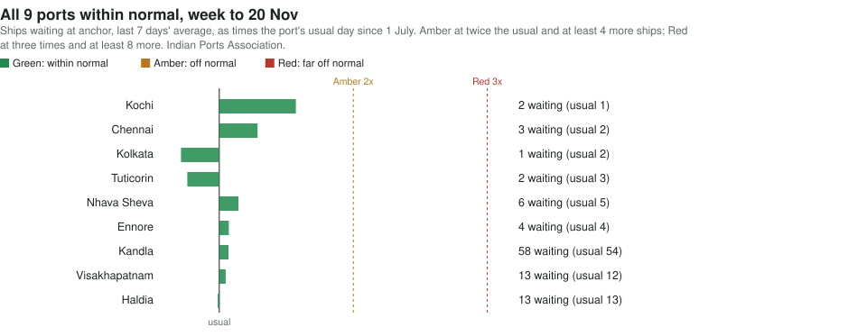
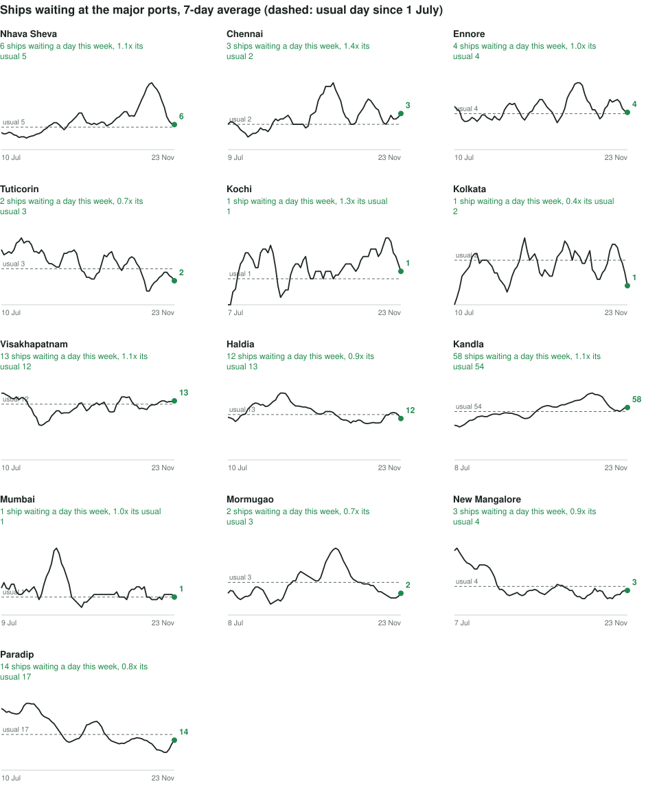
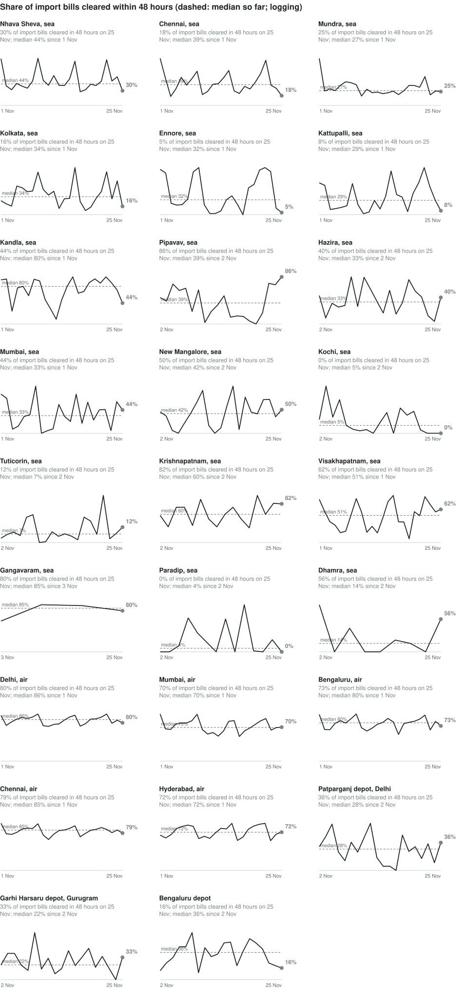
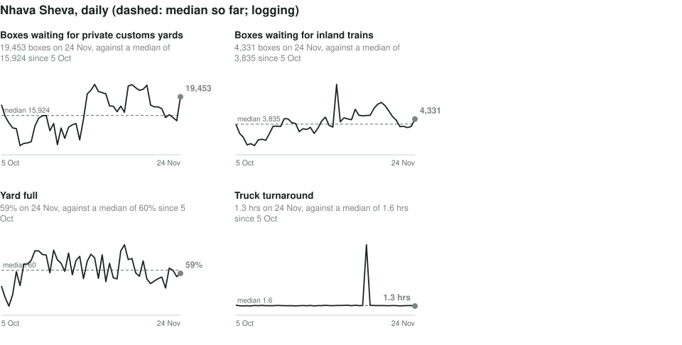

India Freight Monitor · Everything that changes each day · updated 26 November 2026
Daily readings
The readings that move every day: ships waiting at the ports, customs clearance, Nhava Sheva and Paradip, power supply, fuel prices, the rupee and rule changes, plus a scan of the news from world shipping down to India's freight cities. The colours on the monitor's globe come from here for ships waiting.
How fresh each reading is
The newest reading on file for each source, when the next one is normally out, and whether it has arrived. "Late" means the source has not published, or our fetch has not picked it up; either way the readings below it are older than they should be.
Source
Latest reading
Next
Status
From
Ships waiting (Indian Ports Association)
23 Nov
by 26 Nov
on time
daily
Customs clearance (CBIC ICEDASH)
25 Nov
by 28 Nov
on time
daily
Nhava Sheva (JNPA daily report)
25 Nov
by 28 Nov
on time
daily
Paradip daily traffic
24 Nov
by 27 Nov
on time
daily
Power supply (Grid-India)
24 Nov
by 27 Nov
on time
daily
Diesel and petrol prices (PPAC)
25 Nov
by 28 Nov
on time
daily
The rupee (ECB)
25 Nov
by 29 Nov
on time
daily, weekdays
Rules that changed (DGTR, DGFT, BIS, CBIC)
21 Nov
by 28 Nov
on time
daily
Cyclone bulletin (IMD)
26 Nov
by 29 Nov
on time
daily
News scan (Google News)
26 Nov
by 28 Nov
on time
daily
News scan, world to city
Every headline from 25 Nov and 26 Nov found by 84 searches: shipping and trade abroad, Asia and the land borders, India as a whole, every state, and the freight cities. Each is sorted by what it is about. The count shows where the news is piling up; the lists below show the biggest clusters at each level, the most-reported first.
Headlines as Google News lists them, with the date it gives, which can be wrong for an old article.
Ships at anchor waiting for a berth, the last seven days' average, against each port's usual day since 1 July. Amber at twice the usual and at least four more ships, Red at three times and at least eight more.


Indian Ports Association, daily vessel position.
Customs clearance at 26 gateways
The share of import bills of entry cleared within 48 hours, each day, at the sea ports, airports and inland depots that report to CBIC. Each is drawn against its own median so far. They carry no colour until each has eight weeks of history. Below: every gateway at half its usual pace or slower two days running, an early warning.
Gateway
Latest day
Day before
Usual
Date
Ennore, sea
5%
14%
32%
25 Nov

CBIC ICEDASH, read every morning.
Nhava Sheva, India's biggest container port
JNPA's own daily status report: how full the yard is, how long a truck takes inside, and how many boxes wait for inland trains and for private customs yards. Drawn against the median so far.

JNPA daily status report.
Paradip, India's biggest bulk port
Cargo handled each day against the same day last year, and ships waiting outside.
Day
Cargo, tonnes
Same day last year
Change
Ships waiting
24 Nov
440,596
485,737
-9%
14
23 Nov
485,503
441,044
+10%
11
22 Nov
605,395
428,920
+41%
12
21 Nov
444,067
352,132
+26%
9
20 Nov
3,910
364,621
-99%
16
19 Nov
100
441,587
-100%
20
18 Nov
257,338
473,179
-46%
18
Paradip Port daily traffic report.
Power supply by state
India's peak demand met on 24 Nov was 235,121 MW, against a median of 226,496 MW over the 34 days on file; the shortfall at the peak was 265 MW. 3 states were short of power through the day. A state short of power is a cue for its factories, cold stores and ports.
State
Peak demand met, MW
Short at peak, MW
Energy short, MU
Punjab
8,737
0
2.75
Jharkhand
2,234
0
0.48
Manipur
207
0
0.12
Grid-India (NLDC) daily power supply position report.
Diesel and petrol at the pump
Diesel has not changed in any of the four metros in the last 30 days. Diesel is the biggest running cost of a truck, so a rise here feeds into road freight rates within weeks.
City
Diesel a litre
On 30 days ago
On a year ago
Petrol a litre
Mumbai
₹97.83
+0.0%
+8.7%
₹111.21
Delhi
₹95.20
+0.0%
+8.6%
₹102.12
Chennai
₹99.55
+0.0%
+7.7%
₹107.77
Kolkata
₹99.82
+0.0%
+8.5%
₹113.51
PPAC daily retail prices, 25 Nov.
The rupee
A higher number means a weaker rupee: imports priced in that currency cost more, and exporters earn more in rupees.
25 Nov
On a week ago
On a year ago
Rupees to the dollar
₹92.24
-1.3%
+3.4%
Rupees to the yuan
₹13.82
-1.4%
+9.8%
European Central Bank reference rates.
Rules that changed this week
5 notices from India's trade, anti-dumping, standards and customs authorities first seen in the last seven days. An anti-dumping case can end in a duty on the import; a quality control order stops an uncertified import at the border from the day it takes effect.
Seen
Who
What
Takes effect
Touches
21 Nov
Anti-dumping (DGTR)
Anti-dumping investigation concerning imports of 6-Amino Penicillanic Acid (6-APA) originating in or exported from the People's Republic of China and the European Union
21 Nov
Anti-dumping (DGTR)
Anti-dumping investigation concerning imports of Halo- Isobutene-Isoprene Rubber originating in or exported from China PR, Singapore and the United States of America.
21 Nov
Anti-dumping (DGTR)
Anti-dumping investigation concerning imports of “Penicillin G and its salts” from the People’s Republic of China
21 Nov
Anti-dumping (DGTR)
Anti-dumping investigation concerning imports of Semi-Finished Ophthalmic Lenses originating in or exported from China PR.
19 Nov
Anti-dumping (DGTR)
Anti-dumping investigation concerning imports of “Amoxycillin Trihydrate" originating in or exported from China PR
DGTR, DGFT, BIS and CBIC notices, read daily. "Seen" is the day we first logged it.
Cyclones
IMD's daily cyclone bulletin tracks no storm. Checked 26 Nov. The two-week outlook is on the weekly page.
IMD Regional Specialised Meteorological Centre, New Delhi.